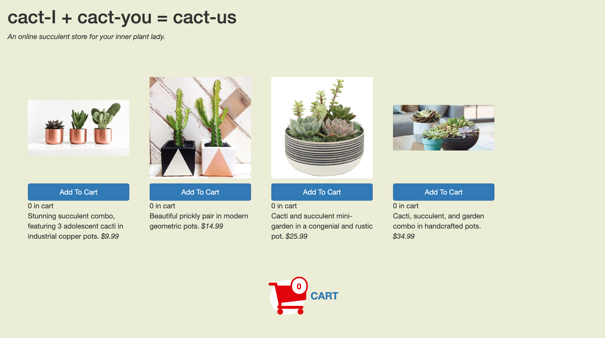
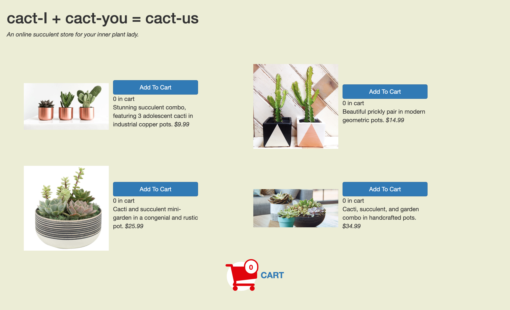
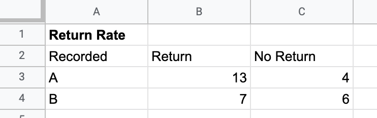
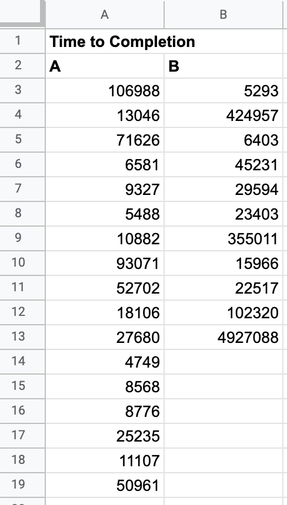
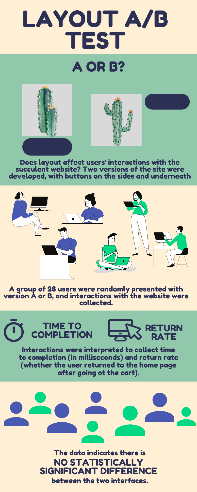

Objective
Perform an A/B test and statistical analysis on website that sells cacti
Deploying website
The website is deployed here. One version displays button and item information on the side while the other displays information on the bottom:
Version A
Buttons are below images.
Version B
Buttons are beside images.
Hypotheses
Time to completion
- Null hypothesis: the button layout does not effect time to completion
- Alternate hypothesis: time to completion is lower when the buttons are on the bottom/li>
Return rate
- Null hypothesis: the button layout does not effect the times a user visits the cart
- Alternate hypothesis: when buttons are beside the image, users will visit the cart more often
Data collection
28 participants were sent the link above, which randomly assigns a user to either version A or version B. The participants were prompted to fill their cart with at least $150 of cacti/succulents. Their button clicks and page loads were recorded into a log file, where return rate and time to completion.
Participants were counted to return if they had ever visited the cart and then the home page. Return rate was calculated to be the time, in milliseconds, between the user's inital page load and their final interaction with the website, whether that be a page load or button click.
 Analysis
- Time to completion rate t score: -0.441
- Time to completion p value: 0.367
- Return rate chi squared: 1.69
- Return rate p value: 0.192
The p-scores of both datasets indicate that no conclusion can be reached. Based on the data, we fail to reject the null hypothesis.
Infographic
Takeaways
- User interaction is varied and difficult to quantify
- The environment wasn't natural, so users had no motivation to click on the buttons because they weren't spending their own money
- A/B is a useful tool to gather information about users, which should inform design decisions